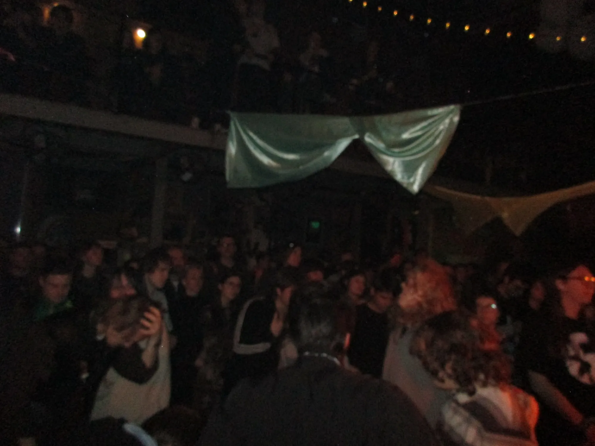
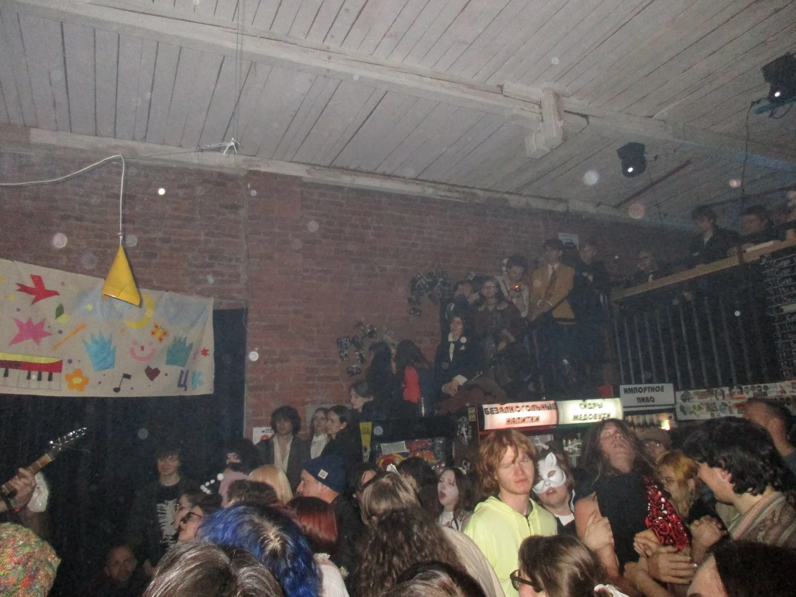

Echo
концертный дневник

Почему я хожу на концерты?
Записи любимых песен у меня всегда под рукой: в наушниках по дороге на учёбу, дома, в очереди. Но живой концерт — это совсем другое. На сцене песня каждый раз звучит немного по-новому: музыканты меняют темп, добавляют паузы, импровизируют, а иногда и ошибаются. Именно эти мелочи делают выступление неповторимым. Даже знакомая наизусть песня вживую может удивить. То, что я слышу в зале, больше никогда не повторится в точности, и от этого каждое мгновение становится ценнее.
Для меня концерт начинается задолго до первого аккорда. Сначала ожидание: купленный билет, обратный отсчёт дней, выбор одежды, дорога до площадки. Потом очередь у входа, где вокруг собираются люди, которые слушают ту же музыку, что и я. Мы не знакомы, но на несколько часов становимся одной большой компанией. Когда весь зал подпевает знакомому припеву, возникает чувство, которое сложно описать словами, — будто ты оказался ровно там, где должен быть.

Иногда эти случайные соседи по залу перестают быть незнакомцами. Разговор в очереди, обмен впечатлениями после выступления, общая шутка между песнями — и вот у тебя уже есть с кем пойти на следующий концерт. Благодаря концертам я нашла новых друзей, с которыми мы теперь вместе следим за афишами, покупаем билеты и обсуждаем любимые группы. Многие интересные знакомства в моей жизни начались именно у сцены, и для меня это едва ли не самое ценное, что дают концерты.
Ещё концерты помогают мне отвлечься от проблем. В обычной жизни много дел, учёбы и забот, а на концерте всё это отступает. Нет времени смотреть в телефон и думать о дедлайнах: есть только свет, звук и люди вокруг. Можно прыгать, танцевать и петь во весь голос, и никто не посмотрит на тебя косо, потому что все вокруг делают то же самое. Даже если неделя выдалась тяжёлой, за пару часов в зале тревоги становятся тише, а на многие вещи потом смотришь спокойнее. После хорошего выступления я возвращаюсь домой уставшей, с охрипшим голосом, но при этом отдохнувшей и полной сил.
Со временем я заметила, что воспоминания о концертах начинают путаться: забываются даты, порядок песен, мелкие детали. Поэтому я решила собрать их в одном месте. На этом сайте хранятся мои фотографии, сохранившиеся сетлисты и афиши, а также короткие заметки о том, что я чувствовала. Мне нравится пересматривать их и вспоминать, сколько всего уже было. Это мой личный архив живой музыки, который я буду пополнять после каждого нового концерта.
Я побывала на
14
концертах